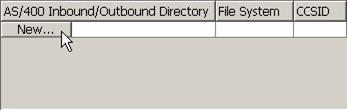
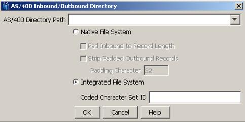
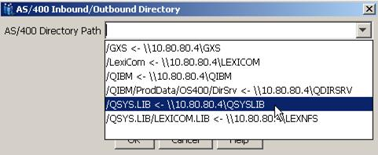
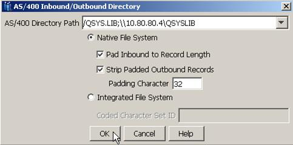

Select the AS/400
Inbound/Outbound Directory Paths
Follow these steps to add an AS/400 directory path to the
Cleo Harmony configuration. Repeat this process for each additional directory path:
In the lower portion of the AS/400 Configuration panel, click the New button
as shown:

A display similar to the following will appear. Click on the down arrow to get a
list of all AS/400 mapped file shares in your network:

If you have mapped AS/400 file shares, a display similar to the following will be
shown:

Select the desired mapped file share, if one exists. Otherwise, enter the desired
path in the AS/400 Directory Path field (for example, /QSYS.LIB for Native
File System access or /LexiCom for Integrated File System access).
Select the appropriate file system option, i.e., either Native File
System or Integrated File System.
If the Integrated File System option is selected, enter the appropriate
Coded Character Set ID value, if provided by your trading partner. If
this field is left blank, the CCSID value based on the default locale will be
used.
If the Native File System option is selected, select the Pad Inbound to
Record Length option if inbound files will contain variable length records.
When this option is selected, all records are transformed to a fixed-length format
as they are stored in the AS/400 NFS file member. End of line terminators (that is,
CR, LF or CRLF) are stripped from the record and the remainder of the record is
padded with blanks. The record length is determined from the AS/400 target file. If
the inbound file contains a record larger than the AS/400 target file, an error will
be logged and the file will not be stored. When this option is not selected, the
inbound file will be assumed to already be fixed-length and will be streamed, i.e.,
no padding will be done to the records as they are written to the AS400 NFS file
member and end of line terminators will not be stripped from the file.
Select the Strip Padded Outbound Records option if outbound
records are a fixed record length and are padded with the specified Padding
Character. The record length is determined from the AS/400 NFS target file. When
this option is selected, padding characters after the terminator (CR, LF or CRLF)
will be removed.
The Padding Character is the decimal value of the character used in AS/400
target file for padding outbound records. By default, this value is set to 32 (the
ASCII representation of a space). Any ASCII value between 0 – 127 can be
used.
The updated display should look similar to the one that follows. Click
OK.

The updated AS/400 Configuration panel will now be displayed similar to the one
below. Click OK.